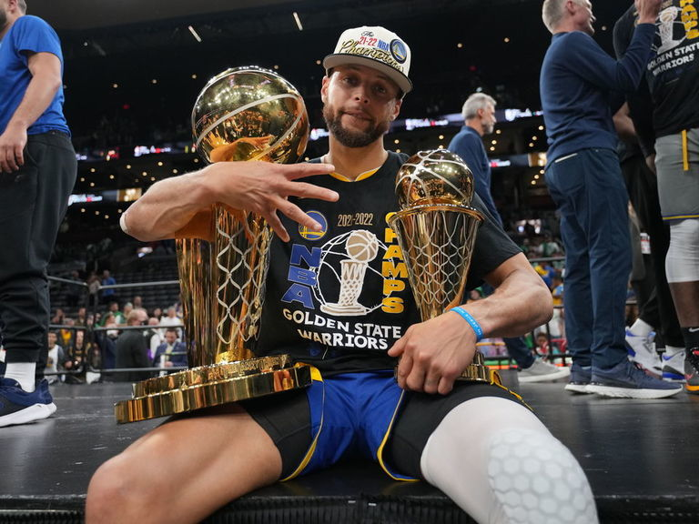
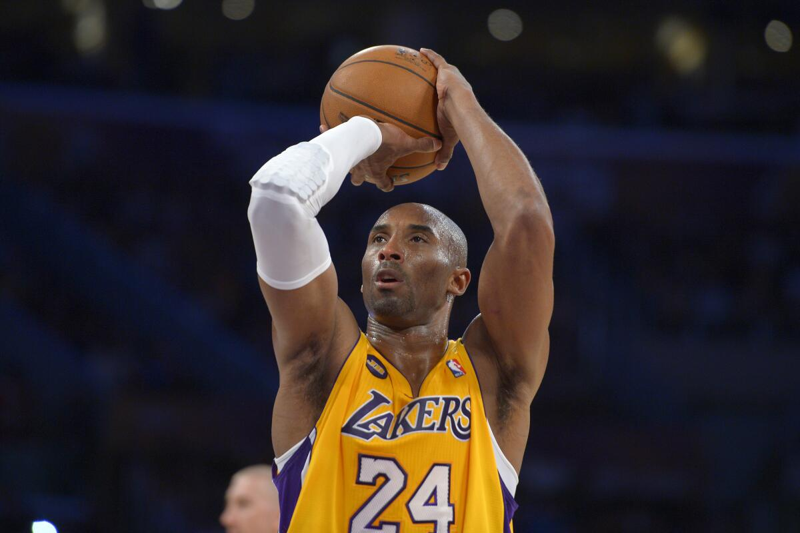

En esta seccion veremos mis 3 jugadores favoritos de la NBA por su trayectoria deportiva y su nivel de juego.
Michael Jordan es el mejor de la historia de la NBA pot todos los puntos que ha hecho y logros que ha tenido a lo largo de su carrera, fue campeon de la NBA 6 veces, bicampeon olimpico, cinco veces MVP de la NBA y seis veces MVP de las finales de la NBA
Kobe Bryant tambien es uno de mis jugadores favoritos en la historia ya que el tenia una mentalidad que nadie puede igualar, todo mundo quieren la mentalidad que el tenia la cual es "MABMA MENTALITY" la cual busca el máximo conocimiento de uno mismo con trabajo, el esfuerzo y, por supuesto, con la ilusión de ser mejor. Tambien fue muy bueno ya que ganó cinco campeonatos del mundo, dos veces medallista de oro olimpica, 18 veces all-star y cinco veces campeon de la NBA
Stephen Curry se ha convertido en mi jugador favorito debido a que su estilo de juego diferente me ha llamado demasiado la atencion tanto que me motivan cada dia a ser como el en el aspecto de todo ya que es considerado de los mejores bases de la NBA y de los mejores tiradores de la actualidad, lo que ha ganado a lo largo de su carrera es que ha ganado 6 trofeos de conferencia y 4 campeonatos de la NBA, 2 veces MVP y 2 veces campeon del concurso de triples de la NBA